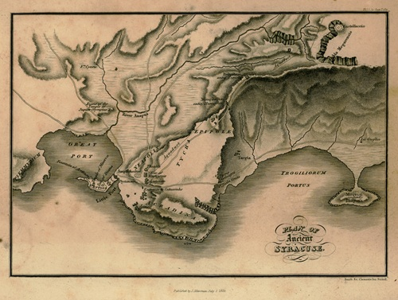

Syracuse

Syracuse pendant les guerres puniques
Syracuse était la ville la plus puissante de Sicile. Au début de la première guerre punique, Syracuse s'allie d'abord avec Carthage contre Rome. Mais après quelques défaites, elle change de camp et devient alliée de Rome en 263 av. J.-C.
Cette alliance dure longtemps. Pendant des décennies, Syracuse reste neutre et prospère pendant que Rome et Carthage se font la guerre autour d'elle. Mais à la mort de son roi Hiéron II, la ville bascule du côté de Carthage après la terrible défaite romaine de Cannes en 216 av. J.-C.
Source : Wikipedia — Syracuse
Le siège de Syracuse (214 – 212 av. J.-C.)
Rome envoie alors le général Marcellus assiéger Syracuse. Mais la ville résiste pendant deux ans grâce aux inventions extraordinaires du savant Archimède, qui vivait à Syracuse.
Archimède conçoit des machines de guerre impressionnantes pour repousser les Romains — des catapultes ultra-précises, des grues géantes qui soulevaient les bateaux romains pour les faire chavirer, et selon la légende, des miroirs qui concentraient la lumière du soleil pour brûler les navires ennemis. Rome finit par prendre la ville en 212 av. J.-C. grâce à une trahison intérieure.
Source : Wikipedia — Siège de Syracuse
La chute de Syracuse
Quand les Romains entrent dans Syracuse, ils pillent la ville et emportent ses richesses et œuvres d'art à Rome. Archimède est tué pendant le sac de la ville, malgré les ordres de Marcellus qui voulait le garder en vie.
La chute de Syracuse marque la fin de l'indépendance sicilienne. Toute la Sicile passe sous contrôle romain et reste une province romaine pour les siècles à venir.
Source : Wikipedia — Archimède